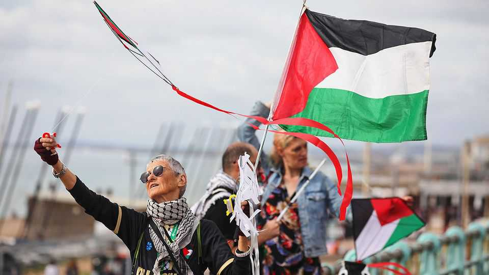

Britain’s Greens are now a hard-left, antisemitic party
The former Ecology Party cares more about Zionism than the environment

Oct 8th 2026
The Green Party conference got off to a characteristically odd start. Zack Polanski, the leader, bounded onstage to rapturous applause. He then gave a performance that bordered on pantomime—less a speech than a series of 30-second monologues to be clipped for social media. His delighted audience clapped at each one.
Two days later, on October 4th, this euphoric crowd voted to define Zionism as racism and to call for Israel’s abolition. Jews, the Greens say, may live as citizens in a Palestinian state if they like. And Palestinian "resistance” (read: violence) is fine, since the aggressors are freedom fighters.
The Green Party has changed. Once called the Ecology Party, it used to draw a strong contingent of conservationists who might otherwise vote Conservative. This year such people were nearly absent from the conference in Brighton. For the most part, their place was taken by first-timers, few of whom cited environmentalism as their reason for signing up.
Instead, the Greens have been hijacked by a mix of young socialists and veteran left-wingers disillusioned by the turn the Labour Party took under Sir Keir Starmer, its former leader. The new members talk scathingly of his “neoliberal” government, which last year passed the most generous renters’- and employment-rights laws in a generation. They are troubled by Labour’s “authoritarian” stifling of free speech, so have decamped to a party that bans journalists from its policy debates.
A depressing result is that a nasty strain of antisemitism has quickly come to dominate the Greens. Their party is unusually decentralised, with policy decided not by MPs or the leader but by members. The number of these has tripled since Mr Polanski took the helm last year. The anti-Zionist motion was put forward by Greens for Palestine, an internal faction, which then voted down all proposed amendments to dilute it and to protect Jewish Greens from discrimination.
Some such amendments came from Mr Polanski himself, who is Jewish (though avowedly anti-Zionist). A faction within his party, therefore, now condemns him as a “genocide denier”. He is standing in a by-election due to be held in the Holborn & St Pancras constituency on October 8th; some Greens have taken to questioning whether it is even worth their campaigning for him. Should the party’s purity spiral over Palestine continue, it may eventually leave it leaderless.
Judy, who has been a Green member for over 20 years, says new groups of well-organised activists have “steamrollered our policymaking” to promote their own agendas. These neophytes, she says, deal in “performative nonsense” and “have never grown a potato”. What they really want is to transform the party into a pressure group that forces the Labour government to the left. Mr Polanski has encouraged this kind of thinking. “Vote Green, and watch Labour move,” he told the adoring crowd on October 2nd.
The Greens’ dark turn comes as voters are already turning away from them. Earlier this year the party briefly polled at 21%, better than both the Conservatives and Labour. That has since fallen by about half—probably in part because, working as a pressure group, the Greens managed to help push out the unpopular Sir Keir as prime minister. His replacement, Andy Burnham, is better liked by voters on Labour’s left, who will therefore feel less drawn to a fringe party.
An obsessive focus on Zionism seems unlikely pull them back. Nor will the unsettling scenes in Brighton. Inside the Greens’ conference hall, a room was kept free for Jews worried about their safety; outside, party members chanted: “From the river to the sea, Palestine will be free.” Police separated pro-Israel demonstrators from the rest. “The party has fundamentally changed,” Judy reflects sadly, “and if you sell yourself to the devil, you dance to the devil’s tune.” ■